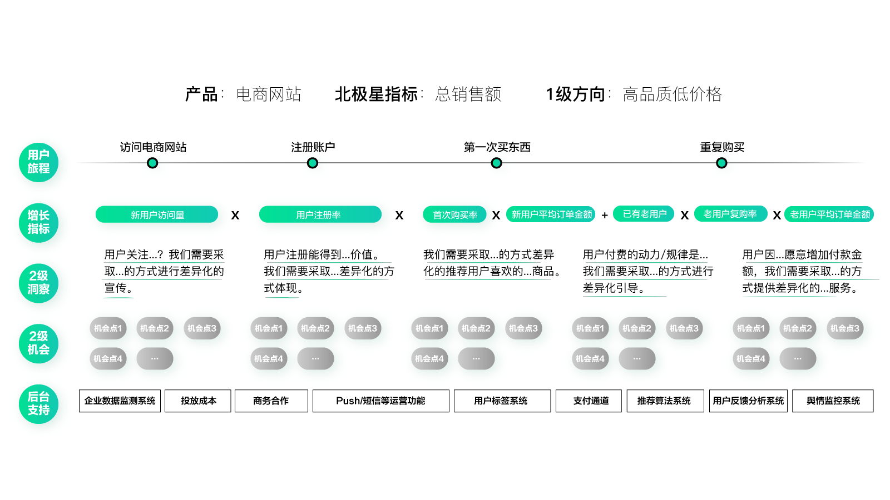

- 00 开篇词 人人都是增长官.md.html
- 01 预习 增长小白如何“弯道超车”？.md.html
- 02 预习 如何理解“增长”？.md.html
- 03 预习 不同职能如何做好增长？.md.html
- 04 预习 做增长如何处理职能间的矛盾？.md.html
- 05 正确目标找不对，天天加班也枉然.md.html
- 06 活学活用北极星指标.md.html
- 07 OKR如何助力增长？.md.html
- 08 不懂用户调研？那就对了！.md.html
- 09 调研目标：在差异性洞察中找到爆破点.md.html
- 10 数据分析：在“花式对比”中发现玄机.md.html
- 11 用户分类：围绕北极星指标细分人群.md.html
- 12 用户访谈：像侦探一样寻找破案线索（上）.md.html
- 13 用户访谈：像侦探一样寻找破案线索（下）.md.html
- 14 提炼用户差异，发现增长契机.md.html
- 15 挖掘产品优势，打破增长瓶颈.md.html
- 16 定位营销差异，抢占用户心智.md.html
- 17 一级方向：找到增长爆破点.md.html
- 18 B端产品如何调研？.md.html
- 19 全局规划增长机会.md.html
- 20 统筹全局的用户增长地图.md.html
- 21 案例解析：定义关键增长指标.md.html
- 22 正负双向洞察，找准切入点.md.html
- 23 二级机会：制定增长策略.md.html
- 24 为一家濒临破产的公司制定增长策略（上）.md.html
- 25 为一家濒临破产的公司制定增长策略（中）.md.html
- 26 为一家濒临破产的公司制定增长策略（下）.md.html
- 27 为什么指标数据怎么优化都不提升？.md.html
- 28 案例解析：打造增长闭环（上）.md.html
- 29 案例解析：打造增长闭环（下）.md.html
- 30 案例解析：唤醒沉睡用户（上）.md.html
- 31 案例解析：唤醒沉睡用户（下）.md.html
- 32 没有分解，就无缘增长.md.html
- 33 四个要点颠覆传统需求文档.md.html
- 34 三级落地：无限场景应用.md.html
- 35 手把手教你设计一次成功的实验（上）.md.html
- 36 手把手教你设计一次成功的实验（下）.md.html
- 37 积少可成多，别针换别墅.md.html
- 38 四级延续：增长组件库案例.md.html
- 39 以用户为中心增长.md.html
- 增长导航图 增长专栏的知识架构是怎样的？.md.html
- 尾声 结束意味着新的开始.md.html
- 预习答疑 你需要一张思维导图吗？.md.html
- 捐赠
21 案例解析：定义关键增长指标
你好，我是刘津。
在上一讲，我们简单了解了用户增长地图的内容。而在这一讲，我会通过若干实例，手把手地带你定义关键增长指标。
案例1：音乐产品用户增长地图
我们来看一下第一个案例，这是一个音乐产品。
假设有一个听歌应用，当前阶段的北极星指标是“总听歌时间”，一级方向是：“注重关联推荐”。
那么它的用户旅程及对应的增长指标可以是：下载应用（下载量）→注册账户（注册率）→首次听歌（首次听歌比例）→持续听歌（持续听歌比例、平均听歌时长）。
如果不考虑用户流失情况，那么理想的总听歌时间=下载量×注册率×首次听歌比例×持续听歌比例×平均听歌时长。
这样，我们就可以把这几个指标定为二级关键增长指标，通过分别提升它们，来提升总的北极星指标。我们也可以通过这个公式来判断要优先提升哪个指标，提升到什么程度最有利于提升北极星指标。
当然，这是最最理想的情况，比如这里没有考虑成本、流失和其它细节问题，实际的情况要复杂很多。当然如果你不是专门负责运营及数据的同学，只是想了解工作重点和方向，那做到这一步也基本足够了。注意要考虑产品具体情况，不要生搬硬套。
接下来我们再看这款产品的二级洞察。
首先，我们先明确产品的一级洞察：用户是谁？它的差异特征是什么？如何差异化地满足？
假设该产品的用户是一群口味独特的小众人群，他们的差异特征是“喜欢比较小众的音乐”，但又找不到风格类似的。所以，我们需要通过强大的关联推荐能力，来找到他喜欢的同类型音乐。
以“下载应用”这个旅程节点为例，在此基础上的二级洞察是用户当前特别关注什么？如何差异化地满足？
假设在“下载应用”这个地方，目标用户特别关注在这个应用里能不能发现更多他喜欢的音乐。那么，我们可以通过醒目的相关宣传来满足用户的需求。
这样得出的相关二级机会可以是：优化应用市场宣传。而优化的内容以突出关联推荐能力为主。其他的节点也是以此类推。
案例2：电商产品用户增长地图
第二个案例是一款电商产品。
假设有一个电商产品，不考虑其它复杂因素，当前阶段的北极星指标是“总销售额”，一级方向是高品质低价格（自营品牌）。

这款产品的用户旅程及对应的增长指标可以是：访问电商网站（新用户访问量）→注册账户（注册率）→第一次买东西（首次购买率、新用户平均订单金额）→重复购买（已有老用户数、老用户复购率、老用户平均订单金额）。
如果想更精确地计算销量，这里我们可以把新老用户分开，计算公式是这样的：总销售额=新用户访问量×注册率*首次购买率×新用户平均订单金额+已有老用户数×老用户复购率×老用户平均订单金额。
我们可以通过公式计算当前阶段的优先级，把新老用户分成两张用户增长地图处理。也可以先用一张图表示，后期执行细节时再分开。
假设在先不分开的情况下，我们来看二级洞察。
该产品的用户主要来自一二线城市、收入中等。用户差异特征是接触到的高品质商品很多，但是又消费不起。所以，这家电商通过自营品牌做到高品质、低价格，满足了这类人群想使用更好的产品的诉求。
以“第一次买东西”这个旅程节点为例，在“高品质低价格”的宣传下，用户对于首次购物会更加谨慎。比如：这家网站到底怎么样？品质是不是真的这么好？不满意能退货吗？……
为了提升用户的购买欲，我们可以通过突出“高品质、低价格”、展示大量用户评论、提供超长期的售后服务、对新用户提供额外福利等多种方式刺激用户购买。在这个过程中打消用户疑虑、建立好信任度。
我们可以看到，整个过程都充满了“差异化”：人群是有差异的、诉求是有差异的、产品定位是有差异的……
相应的，在每个旅程节点，用户的想法也是有差异的。因此，为了创造价值，对应的二级机会自然也是会有差异的。
案例3：B端产品用户增长地图
第三个案例是一款B端产品。
假设，有一个B端数据产品，不考虑其它复杂因素，当前阶段的北极星指标是“月付费活跃用户数”，一级方向是“定制数据”。
用户旅程及对应的增长指标可以是：访问产品着陆页（网站访问量）→注册试用（试用注册率）→在试用期间使用产品（试用购买率）→升级为付费用户（已有用户付费数）→持续使用付费版本（付费用户活跃比例）。
北极星指标月付费活跃用户数=网站访问量×试用注册率×试用购买率+已有用户付费数×付费用户活跃比例。你可以把这几个指标作为二级关键增长指标。
接下来我们再看有关它的二级洞察。
假设该产品的用户为平台商家，非常需要数据帮助他们做决策。但是现在能接触到的数据太少，满足不了需求。所以，该产品通过独家的定制数据能力去满足这类客户需要。
以“注册试用”这个旅程节点为例，在“定制数据”的大方向下，用户首次试用会有很多疑惑：到底怎么个定制化？能满足我的需求吗？有没有效果案例？具体怎么使用？怎么收费？……
为了打消客户在这个节点的疑虑，就需要在页面上突出注册试用能够获得的价值，以及对应的付出，使用户能够放心尝试。
案例4：金融产品用户增长地图
前面几个都是虚拟的例子，现在我们来看一个真实的案例。
宜人贷曾经（在当时的阶段）的北极星指标是“低成本高贷款余额”，一级方向是“突出额度高”。
用户旅程及对应的增长指标可以是：被吸引（各渠道浏览广告新用户×广告点击率+其它渠道注册访客）→注册（注册转化率）→下载App（下载率）→在首页选择借款模式（借款转化率）→借款流程（流程转化率）→放款成功（放款成功率×平均放款额）→按时还款（逾期率）。
因为新用户还款周期很长，如果不考虑再次借款的话，贷款余额=（各渠道浏览广告新用户×广告点击率+其它渠道注册访客）×注册转化率×下载率×借款转化率×流程转化率×放款成功率×平均放款额。
再看成本，假设不考虑运营成本、人力成本等，那么只要尽可能降低逾期率到合理范围即可。
综上，这些指标都可以作为二级关键增长指标。从这里你可以看到，在实际工作中接触到的增长指标可能会有很多，我们需要为这些指标排列优先级。这个在后面两讲中我会详细讲到。
接下来我们再看宜人贷的二级洞察。
宜人贷当时的用户主要是二三线城市的兼职创业者，对额度的要求比较高。因此，宜人贷具有额度高的优势可以很好地帮助到他们。
以“注册”这个旅程节点为例，在“突出额度高”的大方向下，用户就会想了：这个平台靠谱吗？自己能借的到吗？操作会不会很麻烦呢？……这些是在我们之前访谈的过程中发现的，当然如果你足够了解用户和业务，通过常识也可以判断。
围绕一级洞察和二级洞察，我们需要在注册页面上首先突出额度高，其次是平台靠谱、操作便捷等信息。这就是对应的二级机会。
思考题
请在上一讲思考题的基础上，继续完善你的用户增长地图。
欢迎把你的思考和疑问通过留言分享出来，与我和其他同学一起讨论。如果你觉得有所收获，也欢迎把文章分享给你的朋友。
© 2019 - 2023 Liangliang Lee. Powered by gin and hexo-theme-book.